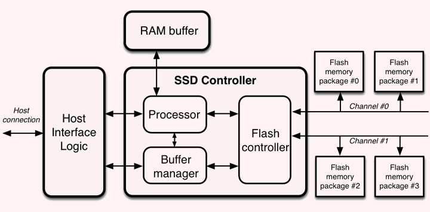
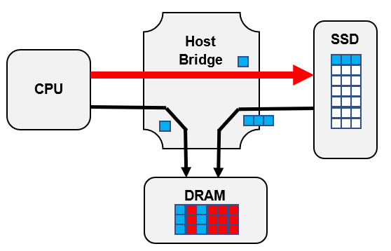

Визуально твердотельный накопитель представляет из себя пластину, внутри которой расположена плата (микросхема). Именно на ней крепятся чипы памяти и контроллер, главной функцией которого выступает управление этой самой памятью. От качества таких составляющих зависит срок службы и скорость работы диска.
Содержит такие же интерфейсы ввода-вывода, как и современные жёсткие диски. В SSD не используются движущиеся части и элементы как в электромеханических устройствах (жёсткие диски, дискеты), что исключает вероятность износа механическим путём.
Большинство современных твёрдотельных накопителей основаны на энергонезависимой NAND памяти. Существуют накопители корпоративного класса, которые используют RAM память вкупе с резервными системами питания. Это даёт очень большие скорости передачи данных, но и цена одного гигабайта очень высока по меркам рынка.
Архитектура NAND SSD
Современные SSD-накопители используют NAND флеш-память, которая состоит из ячеек. Они представляют собой базовые блоки, на которые записывается поступающая на диск информация. Каждая такая ячейка принимает определенное количество битов, которые регистрируются на устройстве в виде чисел 1 и 0.

Накопители, построенные на использовании энергонезависимой памяти (NAND SSD), появились относительно недавно, во второй половине 90-х годов прошлого века, но начали уверенное завоевание рынка в связи с прогрессом в микроэлектронике и улучшением основных характеристик, в том числе стоимости за гигабайт. До середины 2000-х годов уступали традиционным накопителям — жёстким дискам — в скорости записи, но компенсировали это высокой скоростью доступа к произвольным блокам информации (скорость поиска, скорость начального позиционирования). С 2012 года уже выпускаются твердотельные накопители со скоростями чтения и записи, во много раз превосходящими возможности жёстких дисков. Характеризуются относительно небольшими размерами и низким энергопотреблением.
К 2016 году были созданы микросхемы NAND с тремя различными по плотности хранения данных технологиями:
- SLC (Single-Level Cell) — один бит на ячейку
- MLC (Multi-Level Cell) — два бита на ячейку
- TLC (Triple-Level Cell) — три бита на ячейку
TLC обеспечивает наибольшую плотность хранения данных (втрое выше, чем планарная SLC), но имеет наименьший срок службы и меньшую надёжность, которые компенсируются производителями за счёт усложнения обработки данных.
Дальнейшее развитие технологии NAND — 3D TLC, в которой ячейки TLC размещены на кристалле в несколько слоёв. Например, Samsung SSD 850 EVO использует 3D-память с 32 слоями 3-битных ячеек TLC. Производитель обещает для них надёжность на уровне устройств с планарными двухбитовыми MLC.
С 2017 года нашло распространение и QLC (Quad Level Cell) — четыре бита.
Архитектура RAM SSD
Эти накопители построены на использовании энергозависимой памяти (такой же, какая используется в ОЗУ персонального компьютера) наподобие RAM drive и характеризуются сверхбыстрыми чтением, записью и поиском информации. Основным их недостатком является чрезвычайно высокая стоимость за единицу объёма. Используются в основном для ускорения работы крупных систем управления базами данных и мощных графических станций. Такие накопители, как правило, оснащены аккумуляторами для сохранения данных при потере питания, а более дорогие модели — системами резервного и/или оперативного копирования. Примерами таких накопителей являются I-RAM и серия HyperDrive (последние известны в Европе как ACARD ANS-9010 и 9010BA).
Пользователи, обладающие достаточным объёмом оперативной памяти, могут организовывать имитацию подобных устройств за счёт технологии диск в ОЗУ (RAM drive), например, для оценки быстродействия виртуальных машин.
Архитектура побайтного обращения к SSD
 В июне 2019 года в Иллинойсском университете в Урбане-Шампейне разработали технологию FlatFlash, которая в два раза увеличивает производительность приложений с интенсивным потреблением памяти.
В июне 2019 года в Иллинойсском университете в Урбане-Шампейне разработали технологию FlatFlash, которая в два раза увеличивает производительность приложений с интенсивным потреблением памяти.
Для настройки системы инженеры используют стандарт PCIe, в частности, его набор индексных регистров (Base Address Registers, BAR). С их помощью FlatFlash передает хосту данные таблицы распределения памяти, чтобы BIOS и операционная система выполнили необходимую разметку.
После разметки SSD и DRAM объединяются на одном плоском адресном пространстве. Такой подход дал процессору возможность напрямую посылать запросы (загрузить/записать) к твердотельному накопителю с помощью механизма PCIe MMIO. За обработку и перенаправление обращений к этим участкам памяти отвечает главный мост (host bridge).
Что касается отображения данных на соответствующие адресные пространства, то эту задачу реализует непосредственно SSD. Разработчики задействовали блок DRAM, установленный в SSD-контроллере, в качестве кэша. В нем хранится страница, к которой нужно получить побайтный доступ. Побайтные запросы реализуются с помощью одного из регистров BAR.

Другие
В 2015 году компании Intel и Micron заявили о выходе новой энергонезависимой памяти 3D XPoint. Intel планировала выпустить SSD-накопители на основе 3D XPoint с использованием интерфейса PCI Express в 2016 году, которые были бы быстрее и выносливее, чем накопители на основе NAND. В марте 2017 года Intel выпустила первый SSD-накопитель с использованием технологии 3D XPoint — Intel Optane P4800X.